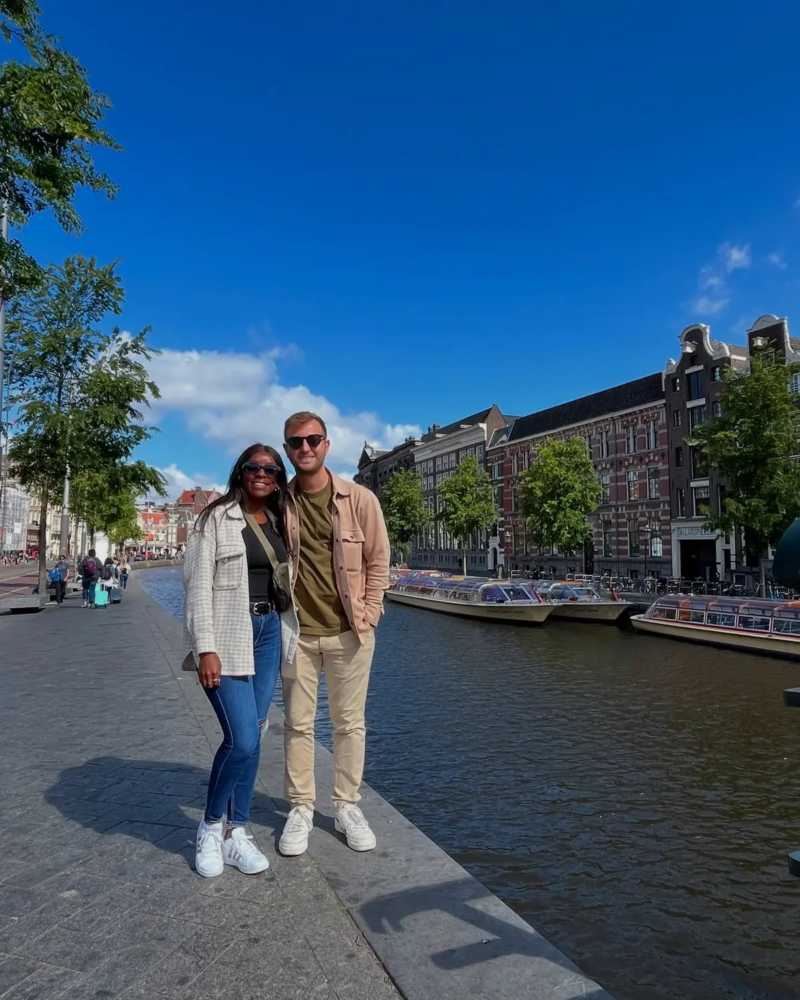
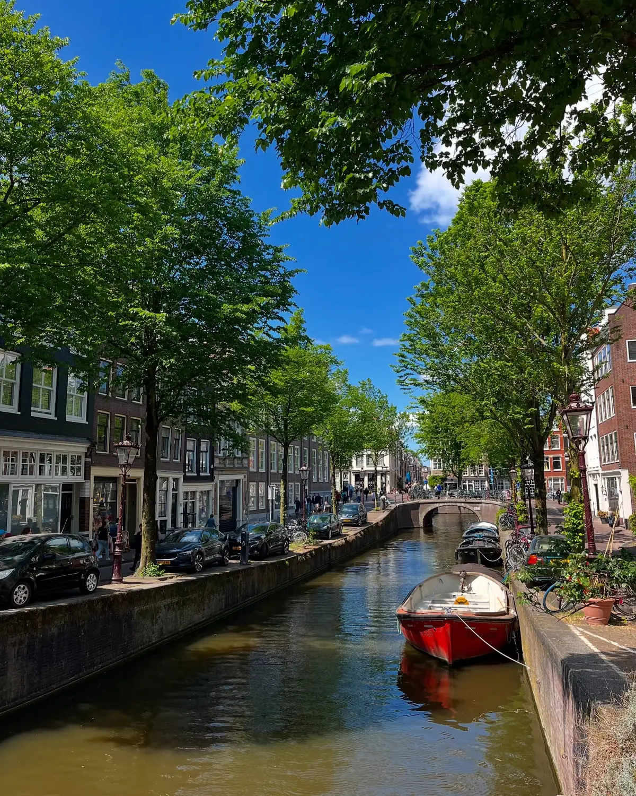

The icon01
The canals & bridges
📍 The Grachtengordel (canal ring)
Amsterdam's UNESCO-listed canal ring is the whole reason to come — 17th-century merchant houses leaning over the water, humpback bridges, and boats everywhere. Just wander: the Jordaan and the "Nine Streets" are the prettiest. The best way to actually see it, though, is from the water, and a relaxed canal cruise (bonus points for one with drinks) is the classic Amsterdam afternoon.
UNESCO canal ringSee it by boat
GetYourGuide
We'd recommend